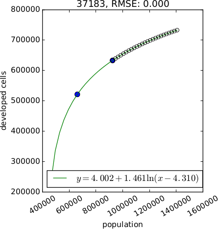
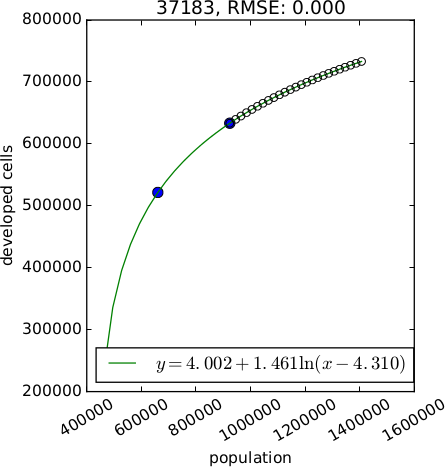

FUTURES
FUTure Urban-Regional Environment Simulation
Anna Petrasova, Vaclav Petras
GIS714 Geosimulations NCSU
FUTURES
(Meentemeyer et al., 2013)- urban growth model
- patch-based
- stochastic
- accounts for location, quantity, and pattern of change
- positive feedbacks (new development attracts more development)
- allows spatial non-stationarity

FUTURES, A Simplified View
turning green cells into orange cells
-1: undeveloped, 0: initial development, 1: developed in the first year, …
Modeling framework

Demand submodel
- estimates the rate of per capita land consumption for each subregion
- extrapolates between historical changes in population and land conversion
- inputs are historical landuse, population data, population projection

Demand scenarios

 


$$
y = Ae^{BX} \\
y = A + Bx \\
y = A + B ln(x) \\
y = A + B ln(x - C) \\
y = (1 - e^{-A(x - B)}) + C
$$
Demand: population decline

- demand submodel designed for regions with population growth
- FUTURES doesn't simulate cell de-conversion: here it would simulate zero new cell conversions
- even with population decline, impervious areas can increase
Potential submodel
- multilevel logistic regression for development suitability accounts for variation among subregions (for example policies in different counties)
- inputs are uncorrelated predictors (distance to roads and development, slope, ...)

surface: potential, orange: developed areas, green: undeveloped areas
Potential submodel
$$
p_i = \frac{e^{s_i}}{1 + e^{s_i}}
$$
$p_i$ is development probability for cell i,
$s_i$ is development potential for cell i
$s_i$ is development potential for cell i
$$
s_i = a_{j,i} + \sum_{h=1}^{n} \beta_{j, i, h} \, x_{i, h}
$$
$j$ is the level (e.g. counties),
$h$ is a predictor,
$n$ is the number of predictor variables,
$a_{j,i}$ is intercept,
$\beta_{j, i, h}$ is regression coefficient,
$x_{ih}$ is the value of h at i
$h$ is a predictor,
$n$ is the number of predictor variables,
$a_{j,i}$ is intercept,
$\beta_{j, i, h}$ is regression coefficient,
$x_{ih}$ is the value of h at i